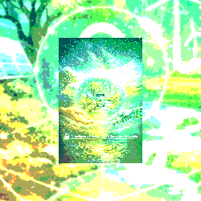

A Governança & Limites definem o campo de atuação consciente da BIO. Não se trata de controle centralizado, mas de um conjunto de princípios, regras e salvaguardas que asseguram que toda decisão respeite limites éticos, operacionais e regenerativos.
A BIO não substitui o humano, não impõe vontades e não ultrapassa fronteiras sensíveis. Ela orienta, alerta e organiza, operando sempre dentro de parâmetros claros de segurança química, proteção do operador, transparência algorítmica e alinhamento com o território.
Esses limites garantem que a inteligência distribuída permaneça saudável, auditável e confiável. A governança existe para proteger o sistema, as pessoas e o ecossistema, evitando excessos, dependências e assimetrias de poder.
Toda ação da BIO é rastreável, explicável e reversível. A autonomia local é preservada, e decisões críticas exigem validação humana. A governança não engessa — ela sustenta.
Assim, a BIO opera como uma inteligência com consciência de fronteira: sabe até onde ir, quando parar e quando devolver a decisão ao humano ou ao território.
